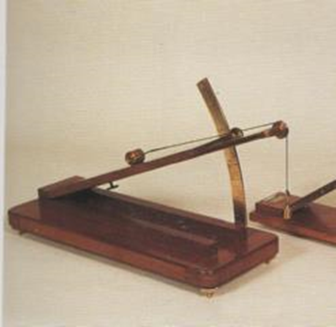

Piano inclinato
Scuola di provenienza: Istituto agrario "F. De Sanctis", Avellino
Settore: Meccanica
Costruttori: Tecnomasio, Milano
Materiali: Mogano attintato a noce, ottone satinato
Accessori: Nessuno
Stato di conservazione: Buono
Descrizione: È un dispositivo per studiare le condizioni di equilibrio di un corpo su di un piano inclinato con forza motrice parallela al piano stesso. Alla sommità del piano c´ è una carrucola, nella cui gola scorre una fune, parallela al piano, collegata ad un peso ed al carrello che scivola sul piano. L´ ampiezza e l´ altezza del piano si valutano rispettivamente, sull´ arco e sul righello metallico. Operando per tentativi si trova il peso che tiene in equilibrio il carrello.